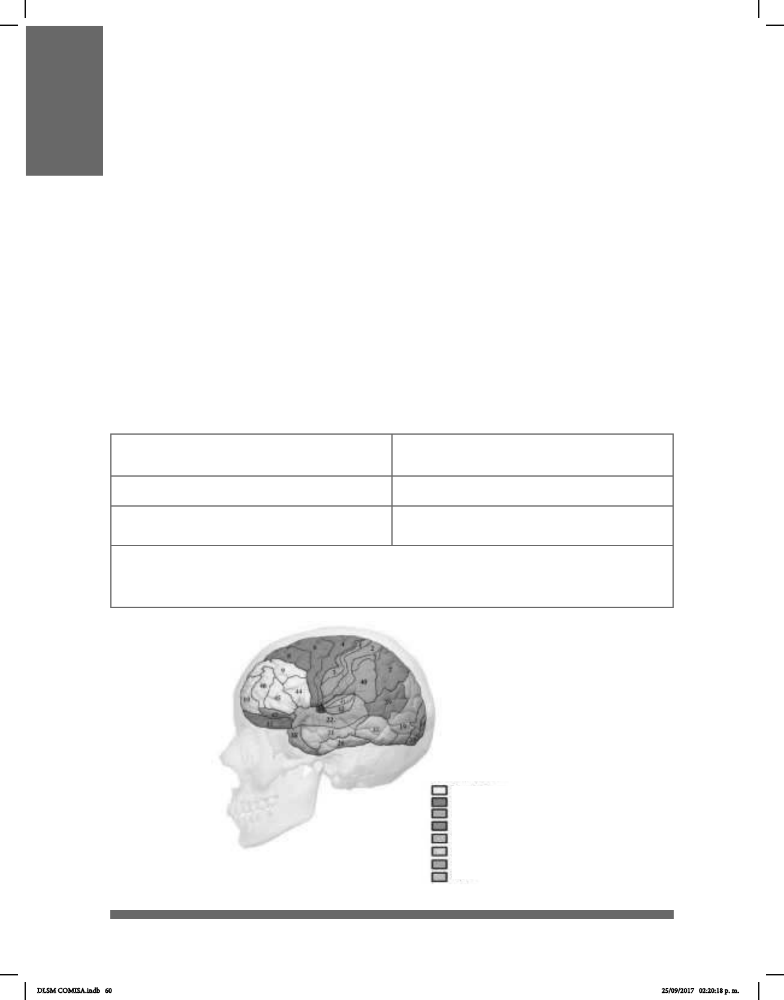

60
MODALIDAD
La modalidad es la vía a través de la cual una lengua es percibida y expresada. Las
lenguas orales son una cadena de sonidos articulados, su modalidad es auditivo-verbal
y se maniesta en el tiempo.
La modalidad de la Lengua de Señas Mexicana (LSM) es visual-gestual-manual. La vía
de eferencia es a través de las manos, cara y cuerpo, mientras que la vía de aferencia
es la vista y se articula en el espacio y en el tiempo. Las lenguas de señas se basan en
medios visuales, pues el signicado se transmite a través de señas manuales y formas
convencionales de expresiones faciales y corporales.
Las lenguas de señas son sistemas lingüísticos verdaderos comparables a las lenguas
orales tanto a nivel funcional como estructural; son lenguas complejas que poseen
gramáticas sosticadas e inventarios muy bastos de señas léxicas. Además, son lenguas
naturales porque se aprenden siguiendo los procesos de adquisición de cualquier lengua,
los cuales se llevan a cabo en áreas del cerebro especícas:
Modalidad de las lenguas de señas:
Visual-gestual-manual
Modalidad de las lenguas orales:
Auditivo-oral
Articulación en el espacio y tiempo
Se localiza en las áreas: 44, 45, 18 y 19.
Articulación en el tiempo
Se localiza en las áreas: 44 y 45.
Ambas lenguas son naturales porque tienen gramática propia y se accede a ellas
siguiendo los procesos de adquisición de cualquier lengua
Funciones Ejecutivas
Funciones Motoras
Somatosensorial
Atención
Función Visual
Memoria
Regulación Emocional
Audición
DLSM COMISA.indb 60 25/09/2017 02:20:18 p. m.